System Context
System Context - Evidence-backed from wiki/c4/workspace.dsl and current API/UI source files.
{kind=link}
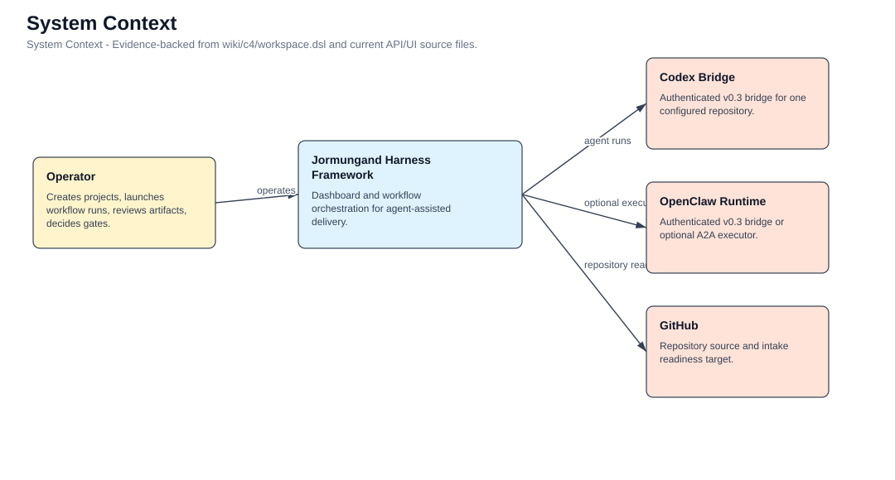
Generated 2026-08-12T17:36:54.037Z from the Ouroboros C4 view set.
System Context - Evidence-backed from wiki/c4/workspace.dsl and current API/UI source files.

Container - Evidence-backed from repos/jormungand/app/page.tsx, repos/jormungand/app/api/** routes, and repos/jormungand/lib/*.ts.
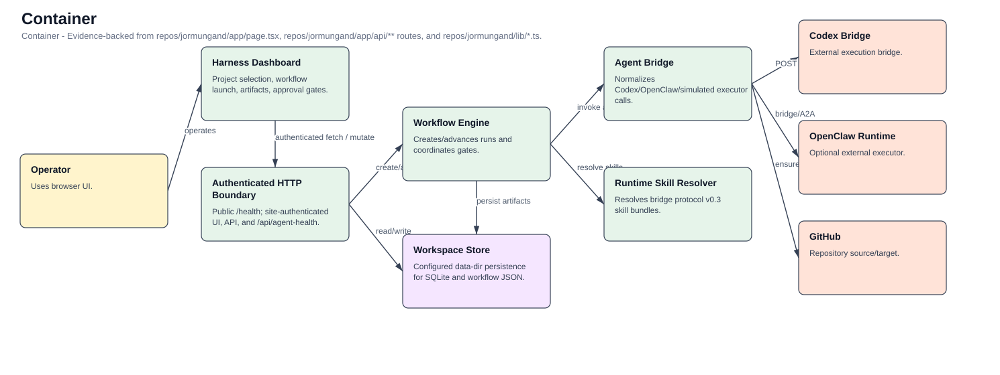
Component - Evidence-backed component view for Harness Dashboard.
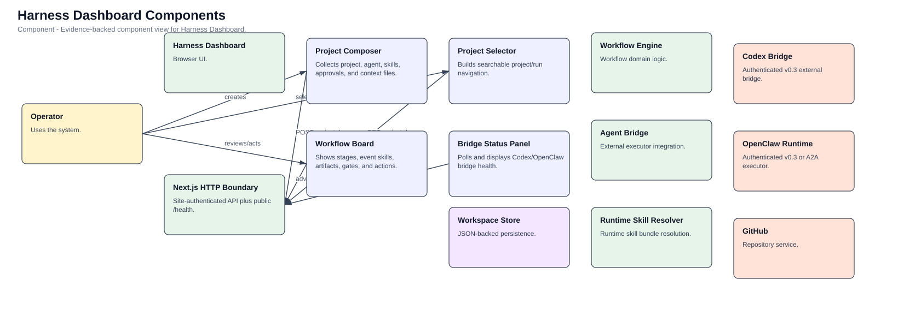
Component - Evidence-backed from repos/jormungand/proxy.ts and repos/jormungand/app/**/route.ts.
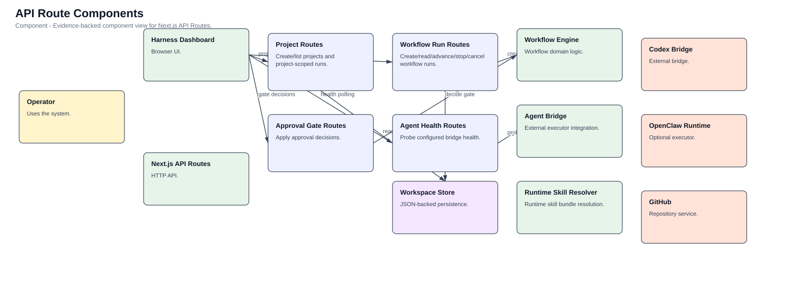
Component - Evidence-backed component view for Workflow Engine.
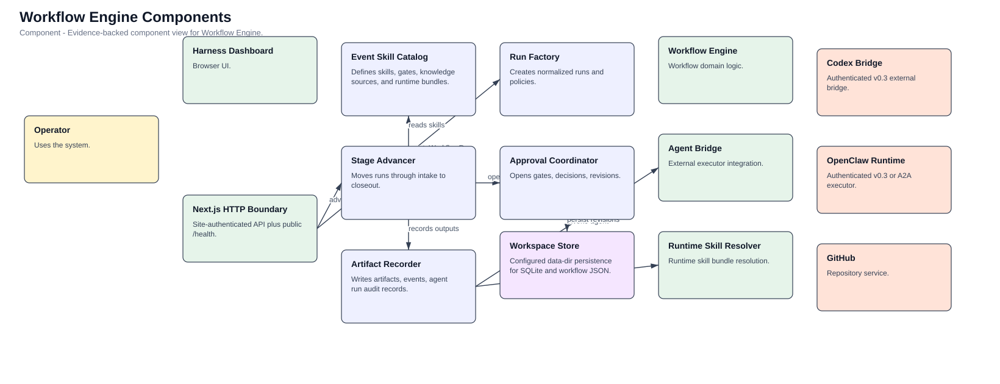
Component - Evidence-backed component view for Agent Bridge.
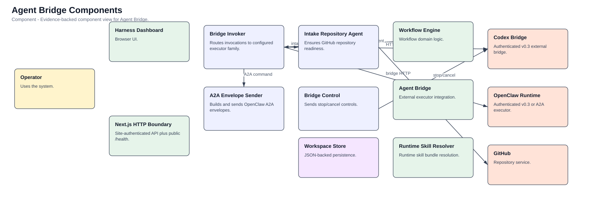
Component - Evidence-backed component view for Workspace Store.
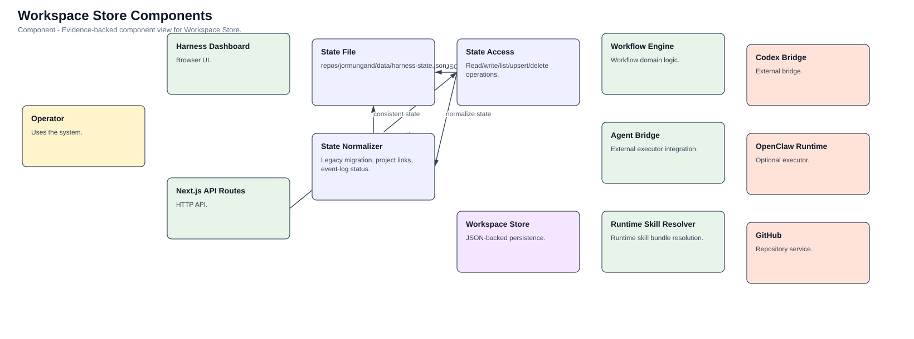
Component - Evidence-backed component view for Runtime Skill Resolver.
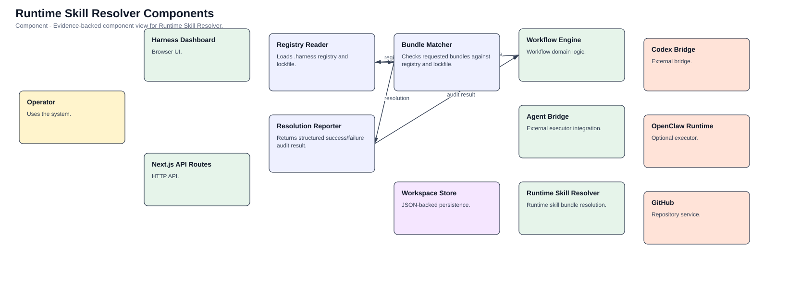
Dynamic - Evidence-backed from repos/jormungand/app/api/workflow-runs/route.ts and repos/jormungand/lib/workflow.ts.
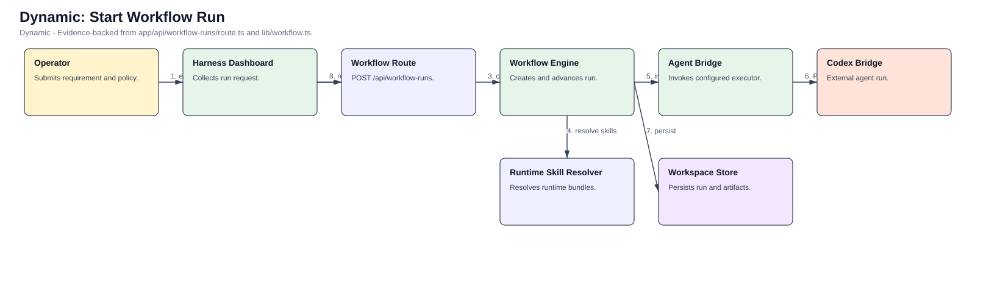
Deployment - Partly inferred from Next.js app layout, local JSON store, and bridge environment variables.
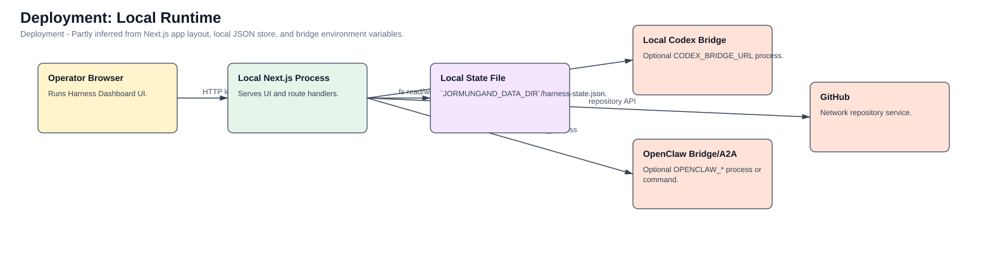
Deployment - Evidence-backed by raw/2026-08-13-secure-bridge-deployment-verification.md and commit 52a020e.
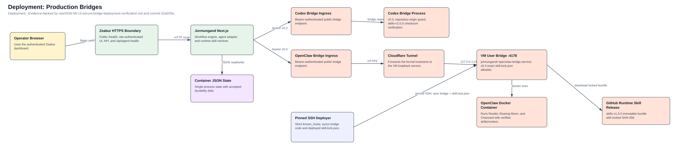
Code - Evidence-backed from graphify report and repos/jormungand/lib/types.ts plus repos/jormungand/lib/workflow.ts symbol names.
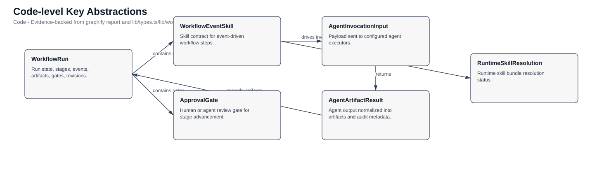
{kind=link}
{kind=link}
{kind=link}
{kind=link}
{kind=link}
{kind=link}
{kind=link}
{kind=link}
{kind=link}
{kind=link}
{kind=link}